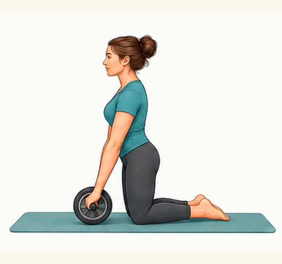

Strength · Core · Hard
Ab Wheel Rollout
From knees, roll wheel forward maintaining rigid torso, roll back. Never let hips drop.
Technique note: Kneeling rollout with a controlled return; keep the torso braced.
3 sets × 8 reps · Rest 60s
Download GIF ↓